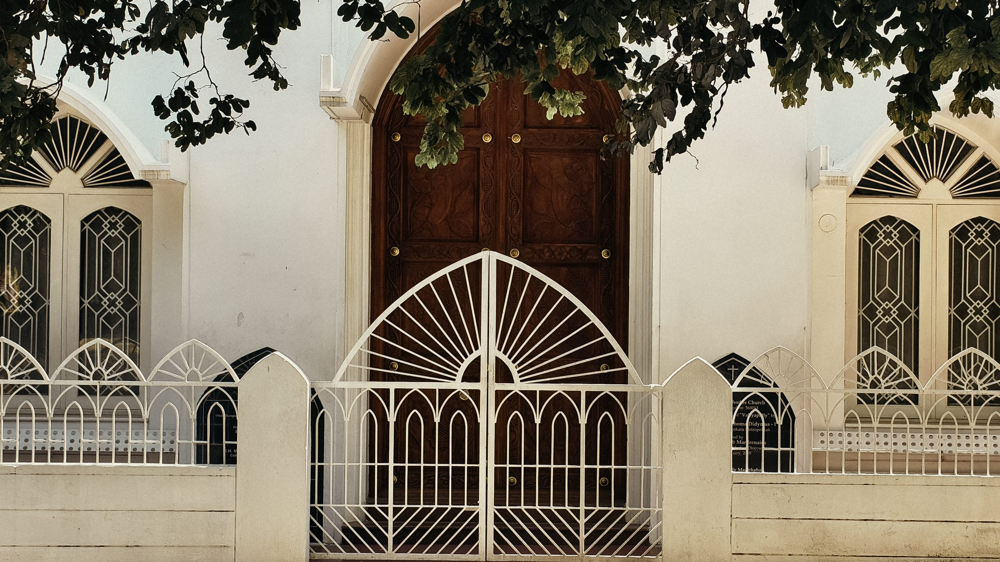
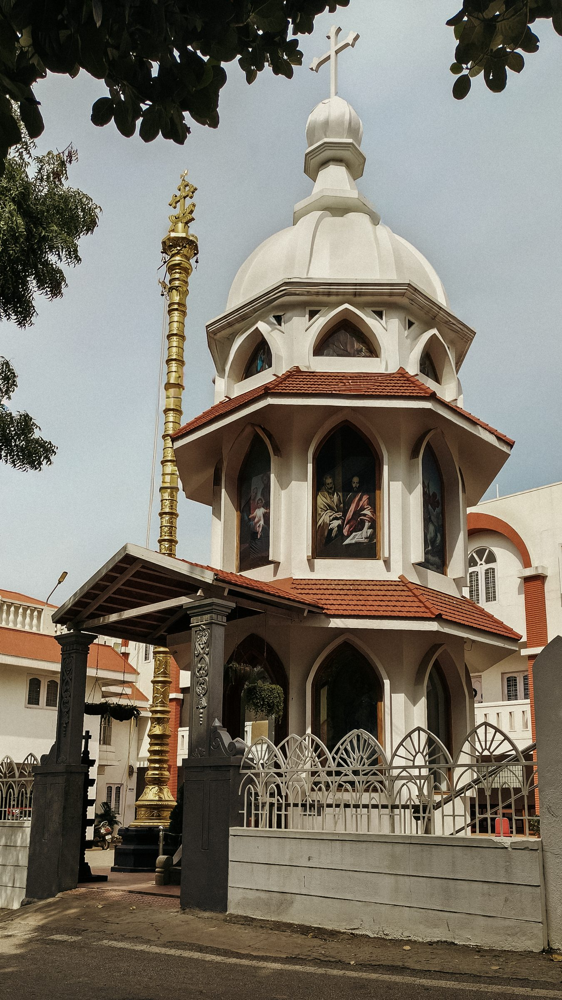
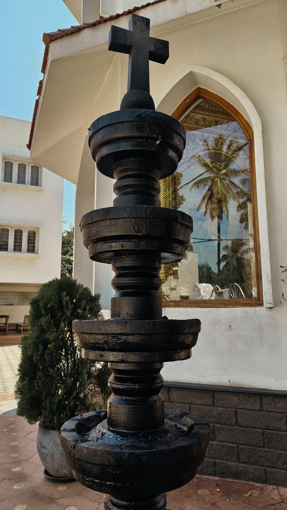
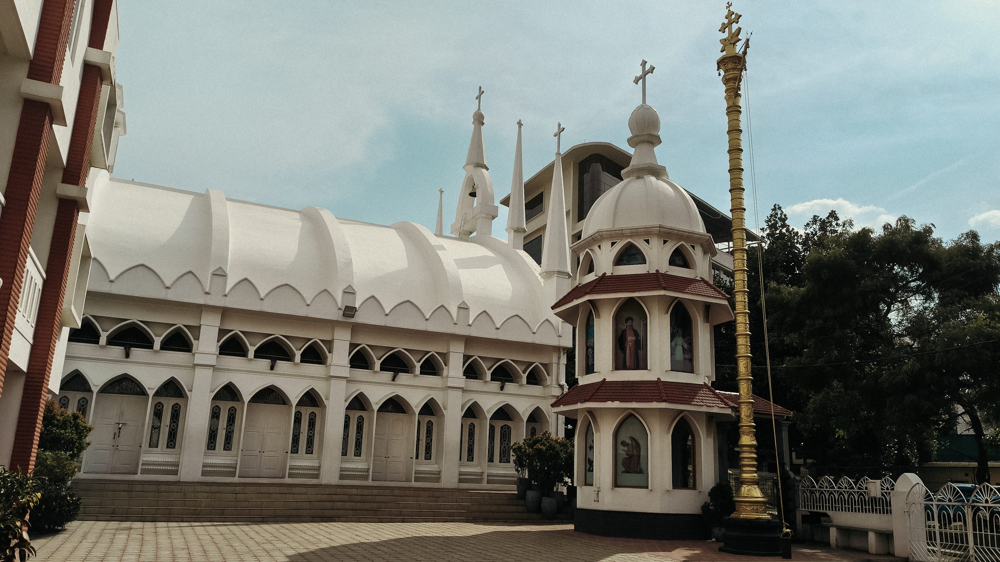

Welcome
A house of prayer, open to everyone who seeks God.
"My soul magnifies the Lord, and my spirit has rejoiced in God my Savior."
The Song of Mary, Luke 1:46–47
St. Mary's Orthodox Valiyapally is a parish of the Malankara Orthodox Syrian Church, Bangalore Diocese, in Jalahalli, Bengaluru. Whether you have prayed here all your life or are visiting for the first time, our doors are open to you.

Under their prayers
Our patron saints
The parish prays under the protection of the Mother of God, with St. Thomas and St. Gregorios of Parumala.
St. Thomas
Apostle of India

St. Mary
Mother of God

St. Gregorios
Parumala Thirumeni

The Song of Mary
My soul magnifies the Lord, and my spirit has rejoiced in God my Savior, for He has looked at the humble state of His servant. From now on, all generations will call me blessed. For He who is mighty has done great things for me, and holy is His name.Luke 1:46–49
Parish life
One familyin Christ
Fellowships that keep the parish praying, singing, learning and serving through the week.
Sunday School
Where our children learn the faith, the Scriptures and the prayers of the Church.
SanThome Choir
The voices that carry the hymns and responses of the Holy Qurbana.
SanThome Youth
Young people of the parish growing in faith, service and friendship.

MMVS and Chaithanya
The fellowship of the women of the parish, in prayer and in service.

Senior Citizen Fellowship
Company, prayer and care for the elders who built this parish.

St. Thomas Charities
The parish reaching out to people in need, near and far.
Inside and out
Gallery
Visit
Find us
St. Mary's Orthodox ValiyapallyJalahalli, Bengaluru
- Holy Qurbana
- Saturday 7:00 AM · Sunday 8:15 AM
- Evening prayer
- Every day, 6:00 PM
- Parish office
- Sunday, Monday & Saturday, 8:00 AM to 12:00 PM